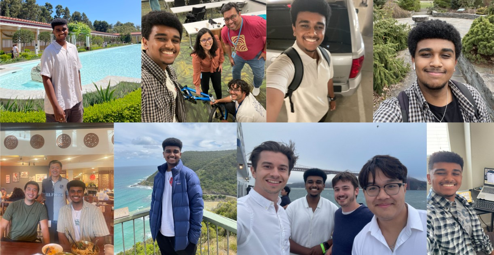
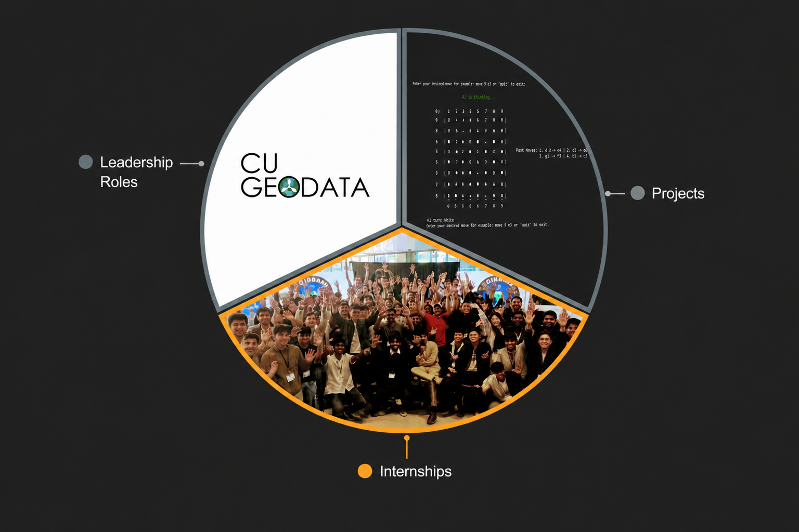

It's nice to meet you.
I am a Cornell University alum (B.S. in Computer Science, Class of 2025). My time at Coinbase as a Software Engineer gave me amazing experience building backend systems in production and collaborating with passionate engineers in a fast-paced industry. I continue to focus on backend development and love adapting to new technologies as I grow as an engineer.
I am motivated by building software that reaches real users at scale. In my free time, I love hopping onto any basketball courts near me and learning new songs on my acoustic guitar.
What do I bring to the table?
I graduated from Cornell's College of Engineering in May 2025 with a Bachelor's degree in Computer Science (Cum Laude, GPA 3.74). This academic experience gave me a strong foundation in data structures, algorithms, and computer systems, along with hands-on project work as Data Subteam Lead on Cornell's CU GeoData project team.
My education stretches beyond completed courses, as my industry experience has allowed me to develop my skills even further. You will find that my diverse set of experiences allows me to bring a unique perspective to any project I am a part of.

Campus projects to production systems
I started on Cornell’s project team CU GeoData, leading the Data subteam and building tools for local environmental data. I then served as a Teaching Assistant for CS 3410, supporting 300+ students across Cornell’s core systems course. From there I interned at Amazon Web Services on a full-stack anomaly-detection project, and at Coinbase on the bridging platform. After graduating, I returned to Coinbase full time, building resilient production systems at scale.
Hover over the different years below for more!
2021
Throughout my time exploring Cornell's CS curriculum (2021-2025), I have worked on several hands-on projects including a Python implementation of the arcade game Space Invaders along with terminal-based multiplayer chess in OCaml (conveniently named CamlChess). Learn about how these projects helped me grow as a developer!
2022
I joined the Cornell project team CU GeoData in my sophomore year (Sept 2022 - Dec 2023). I developed software for both the Water and Data subteams focused on initiatives such as local Harmful Algal Bloom (HAB) predictive models and data visualization.
2023
I interned at Amazon after my sophomore year (May-August 2023), working under the User Experience (UX) organization to perform Full Stack Development in Scala, Spark, and TypeScript. Learn more about the anomaly detection project I delivered that summer!
2024
I interned at Coinbase after my junior year (May-August 2024), joining the fast-paced Blockchain Platform team with a focus on Backend Engineering in Golang. Learn more about my high-impact intern project below.
2025
I joined Coinbase full-time after graduating, working across Transaction Intelligence and Consumer Post Trade — building Golang microservices for gain/loss tracking and crypto portfolio infrastructure. I shipped the Tax Lot Split and Selection APIs and served as an on-call engineer maintaining reliability for millions of users.